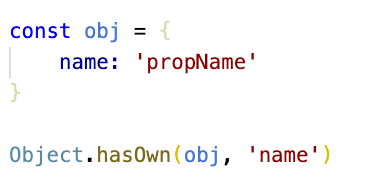
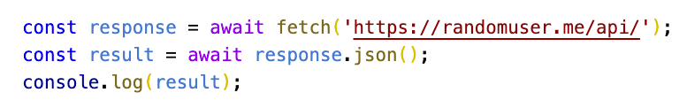

- New strange features of EcmaScript 2022
- Implementation details
- Demo
- Code Example
Object.hasOwn vs hasOwnProperty
Provides a safe way to check if an object obj has an own property with the key propKey.
In contrast to Object.prototype.hasOwnProperty, it works with all objects.

Is a given property own (non-inherited)?
Async Await

Top-level await in modules
Method .at() of indexable values